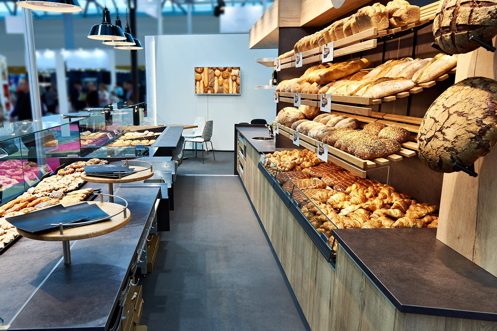

| |
|
|||
| Jhont Coffe | |||||||
|  | História Tudo começou quando Mercedes,avó do Jonathan fazia pães maravilhosos para toda a família comer no café da tarde, com o passar do tempo ele começou a criar um amor por aquele momento que o levou a criar uma padaria com as receitas passadas por sua vó. A Jhont coffe foi se tornando cada vez maior e se tornou uma instituição na cidade. As pessoas se reuniam lá para comer pães e doces deliciosos, e a padaria se tornou um ponto de encontro comunitário. Jonathan nunca esqueceu suas raízes e continuou a usar ingredientes frescos e receitas de sua avó em seus produtos. Ela sempre se esforçava para manter a qualidade e sabor que tornaram a padaria famosa. E assim, Jhont coffe continuou a prosperar como uma das melhores padarias da cidade, graças à paixão e dedicação de Jonathan e sua equipe. |
 |
Quem somos? Somos uma empresa dinâmica, resultante da liderança empreendedora e de uma abrangente experiência de seus diretores. A Jhont coffe, idealizada e sustentada por sólidos valores como: competência, integridade, responsabilidade social, é um empreendimento bem sucedido, sendo seus pontos fortes, qualidade, flexibilidade, agilidade, confiabilidade e produtividade, requisitos indispensáveis para atender às exigências do mundo atual. |
| ORGULHO DE SER JHONT COFFE! Nos orgulhamos da nossa identidade e de sua identificação com os clientes, buscamos manter os valores e tradições que temos há mais de 20 anos, alinhados à cidade de São Sebastião do Paraíso. Nossa localização permite que você desfrute de todas as belezas que a região oferece. |
| REDES SOCIAS | |||||||||||
 |
 |
 |
|||||||||
| HORÁRIO DE FUNCIONAMENTO: | CONTATO: | ||||||||||
| Segunda a sábado: 6:00h até 22:00h Domingo: 6:00h até 11:00h |
Telefone: (35) 9 0000-0000 Email: site@jhontcoffe.com.br |
||||||||||
| ENDEREÇO: | FORMAS DE PAGAMENTO: | ||||||||||
| R. Pimenta de Pádua, 999 São Sebastião do Paraíso/MG 37950-000 |
 |
||||||||||